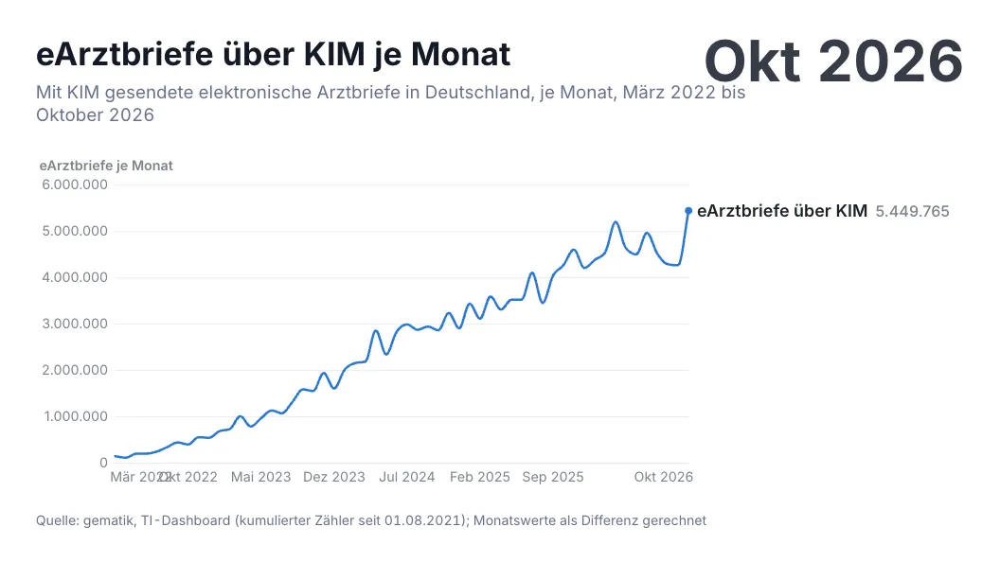
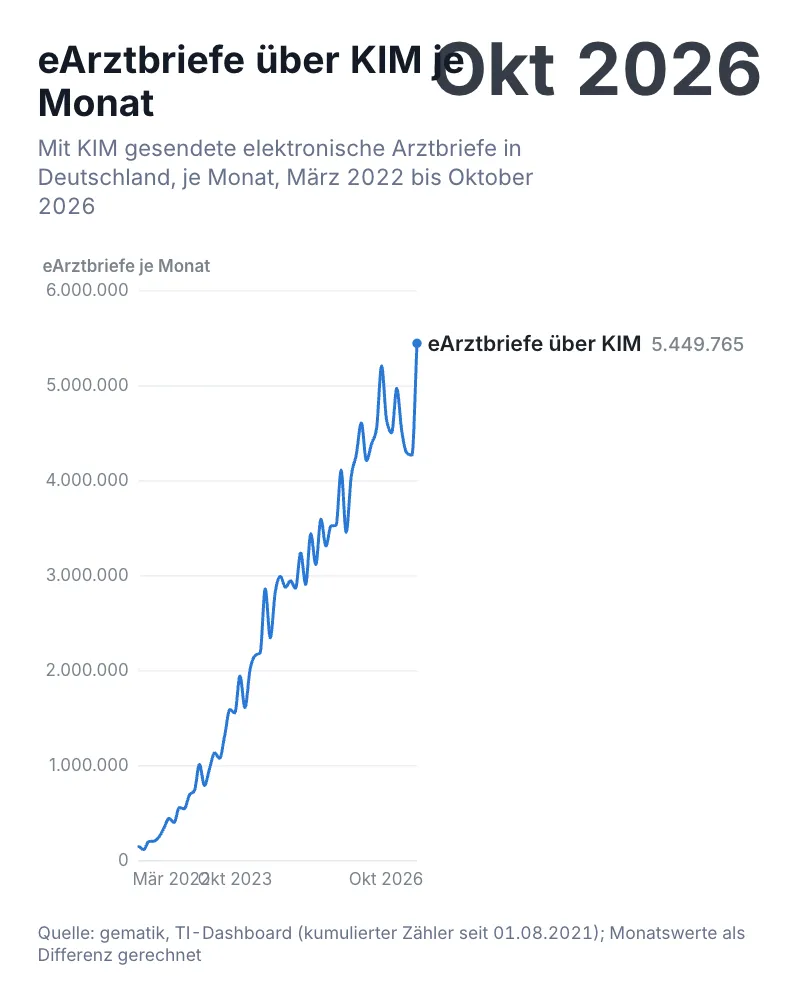

eArztbrief über KIM: 45,2 Millionen im Jahr 2025
Über KIM, den Mail-Dienst der Telematikinfrastruktur, gingen im Jahr 2025 45,2 Millionen elektronische Arztbriefe, laut TI-Dashboard der gematik. 2023 waren es 14,4 Millionen, 2024 32,3 Millionen, und von Januar bis Oktober 2026 schon 46,8 Millionen, mehr als im ganzen Jahr 2025. Im ersten gezählten Monat, März 2022, waren es 150.450.


Das Wichtigste in Kürze
- Menge: 14,4 Mio. eArztbriefe (2023), 32,3 Mio. (2024), 45,2 Mio. (2025), 46,8 Mio. Januar bis Oktober 2026. Der bisher stärkste Monat war der Oktober 2026 mit 5,4 Millionen, vor dem März 2026 mit 5,2 Millionen.
- Kein gleichmäßiges Wachstum: Von April bis September 2026 lagen die Monate zwischen 4,3 und 5,0 Millionen, im Oktober waren es dann 5,4 Millionen, so viele wie nie. Ob das ein neuer Anstieg ist oder ein Ausreißer, zeigen erst die nächsten Monate.
- Nutzung: Laut PraxisBarometer Digitalisierung 2025 nutzen 82 Prozent der Arztpraxen mit TI-Anschluss den eArztbrief über KIM, in psychotherapeutischen Praxen 22 Prozent.
- Software: Systeme mit 88,9 Prozent der Installationen ärztlicher Systeme haben die KBV-Zulassung für den eArztbrief. 1-Click-Abrechnung über KIM können alle, seit KV-Connect am 20.10.2025 abgeschaltet wurde.
Ein Teil des KIM-Verkehrs, nicht der größte
Der eArztbrief ist nicht der Hauptgrund, warum Praxen KIM einsetzen. 2025 gingen insgesamt 256,7 Millionen KIM-Nachrichten, davon 114,0 Millionen Arbeitsunfähigkeitsbescheinigungen an die Krankenkassen (eAU) und 45,2 Millionen eArztbriefe, rund 18 Prozent. Die eAU ist Pflicht; den Arztbrief kann eine Praxis weiterhin faxen oder per Post schicken.
Das zeigt auch das PraxisBarometer: Den Arztbrief empfingen 2018 13 Prozent der Arztpraxen überwiegend digital, 2025 87 Prozent; digital versendet haben ihn 13 und 65 Prozent. Empfangen ist leichter als Senden – für den Versand muss der Brief in der Praxissoftware entstehen, signiert und an die richtige KIM-Adresse adressiert werden.
Für Schnittstellenanbieter heißt das: Der Transport über KIM ist in der Breite angekommen. Offen ist vor allem, was mit dem Brief beim Empfänger passiert – ob er als strukturiertes Dokument in die Akte kommt oder als PDF-Anhang.
Was die Zahl nicht sagt
- Briefe, nicht Praxen. Das TI-Dashboard zählt gesendete eArztbriefe, nicht, wie viele Praxen senden. Wie viele Briefe eine Praxis verschickt, ist nicht veröffentlicht.
- Nur KIM. Arztbriefe per Fax, Post, E-Mail oder über Portale sind nicht gezählt. Der gesamte Briefverkehr zwischen Praxen und Kliniken ist unbekannt.
- Keine Zahl je Software. Weder gematik noch KBV veröffentlichen, aus welchem System die Briefe kommen. Die Zulassung zeigt, was ein System kann, nicht, was genutzt wird. Medical Office steht derzeit nicht im eArztbrief-Verzeichnis der KBV; Zulassungen fallen bei einer neuen Zertifizierung zeitweise weg.
- Zwei Befragungen, zwei Grundgesamtheiten. Die 82 Prozent beziehen sich auf Arztpraxen mit TI-Anschluss, die 87 Prozent beim Empfang auf alle befragten Arztpraxen und umfassen auch andere digitale Wege.
Gerechnet
Die gematik veröffentlicht einen Zähler seit 01.08.2021, jeweils um 0 Uhr UTC. Jeder Monatswert der Grafik ist die Differenz zweier Monatsendstände, ein Monat reicht dadurch vom Vortag des Monatsletzten bis zum Vortag des nächsten. Die Jahressummen sind gleich den Differenzen der Jahresendstände. Der Anteil der Installationen mit Zulassung ist aus der KBV-Installationsstatistik (Ende 2025) und dem Zulassungsverzeichnis (Stand 21.10.2026) gerechnet, der Anteil des eArztbriefs am KIM-Verkehr aus den beiden Zählern. Die Werte des PraxisBarometers sind veröffentlichte Prozente.
Quelle und Methode
gematik, TI-Dashboard, Verlauf KIM; KBV/IGES, PraxisBarometer Digitalisierung 2018–2025; Kassenärztliche Bundesvereinigung, Zulassungsverzeichnisse (eArztbrief, Stand 21.10.2026) und Installationsstatistiken; Vergütung und Empfangspflicht laut KBV, eArztbrief; Abschaltung von KV-Connect laut KV Bayerns. TI-Dashboard abgerufen am 4. November 2026, alle anderen Quellen am 22. Oktober 2026. Welche Systeme welche Zulassung haben, steht in Praxisverwaltungssysteme in Deutschland; wie es bei den Labordaten aussieht, in LDT-Befunde ja, Aufträge kaum.
Häufige Fragen
Wie viele eArztbriefe werden in Deutschland verschickt?
Über KIM 45,2 Millionen im Jahr 2025 und 46,8 Millionen von Januar bis Oktober 2026, laut TI-Dashboard der gematik. Briefe per Fax oder Post sind darin nicht enthalten.
Welche Praxissoftware kann den eArztbrief?
Laut KBV-Zulassungsverzeichnis Systeme mit 88,9 Prozent der Installationen ärztlicher Systeme, darunter CGM MEDISTAR, CGM TURBOMED, medatixx, tomedo und T2med. Die vollständige Liste steht in der Übersicht der Praxisverwaltungssysteme.
Nutzen Psychotherapeuten den eArztbrief?
Seltener: Laut PraxisBarometer 2025 nutzen 22 Prozent der psychotherapeutischen Praxen den eArztbrief über KIM, gegenüber 82 Prozent der Arztpraxen mit TI-Anschluss.
Was bekommt eine Praxis für einen eArztbrief?
Laut KBV 28 Cent für den Versand (GOP 86900) und 27 Cent für den Empfang (GOP 86901), zusammen höchstens 23,40 Euro je Quartal und Arzt. Seit 30. Juni 2024 müssen Praxen eArztbriefe mindestens empfangen können.